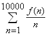

Multiples with small digits
Problem 303
Published on Saturday, 25th September 2010, 10:00 pm; Solved by 2348; Difficulty rating: 35%For a positive integer n , define f ( n ) as the least positive multiple of n that, written in base 10, uses only digits ≤ 2.
Thus f (2)=2, f (3)=12, f (7)=21, f (42)=210, f (89)=1121222.
Also,
 .
.
Find  .